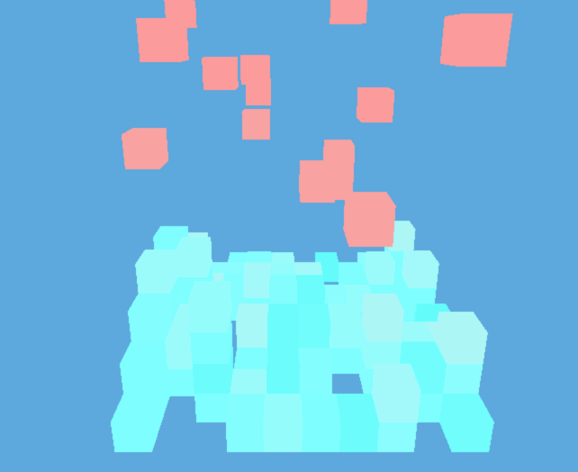
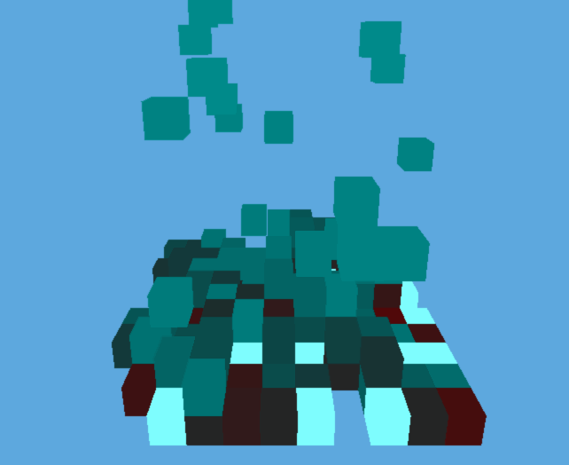
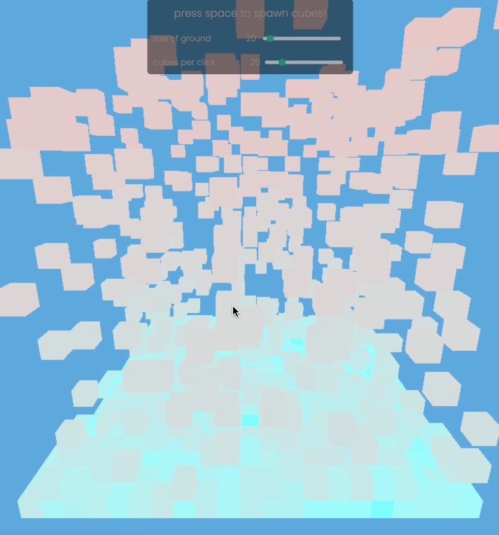
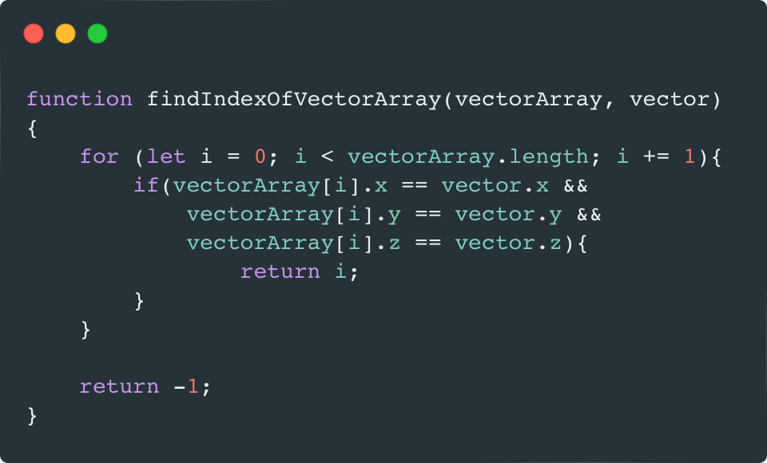

What is this project?
I created a 3D "Falling Sand" simulation using Three.js, inspired by Daniel Shiffman's video on the topic. It was a two-day experimental project, and the experience was incredibly rewarding. The project simulates particles interacting in a 3D space, bringing the classic 2D concept to life in a new dimension. You can try it by yourself!

Three.js logo - tech that I used
coding challange - genuary 2024
Process overview
I started with a simple falling sand prototype, but the 'physics' (rules for the sand) were poorly specified. As a result, the sand was forming towers, which shouldn't have happened. After making some improvements, the towers disappeared, but the sand was no longer following the grid I had specified. With some further tweaking, I achieved the desired falling sand behavior. Finally, I added a prototype control panel to make the demo more customizable.

first project protytpe with visible "towers", without "sand" physics

improved prototype, it still doesn't snap to the grid

prototype with first control panel, also it snaps to grid
After refining the project, I decided to add control over the camera's Z position to make it easier for users to observe the sand. I also improved the overall appearance of the control panel, making the text much more visible.

final look of the project, with better looking panel and additional camera control
Problems I encountered
In general, using the Three.js library was a very enjoyable and smooth experience. The documentation is easy to follow and understand. However, I'd like to take a moment to discuss some of the challenges I faced.
The first issue, if I can even call it a problem, relates to the installation method I recommend. I suggest going with option 2: importing from a CDN. Initially, I installed Three.js using NPM and a build tool, but after about two hours, I noticed that my MacBook was getting warm—not overly hot, but enough to notice. After switching to importing Three.js from a CDN, it seemed to be less demanding on my computer (at least in my case), as the MacBook stayed cool even during longer sessions with Three.js.
Another issue I encountered was some strange behavior with an array containing THREE.Vector3 objects. The array couldn't find elements that were already in it, likely because it was trying to match the exact object reference rather than just vectors with the same XYZ coordinates. This was quite frustrating and took me a while to figure out. In the end, I wrote my own script to solve the problem.

1. vector that I wanted to find in array;
2. array where vector is located in 1st index;
3. result of array.indexOf(vector) calling - vector not found
